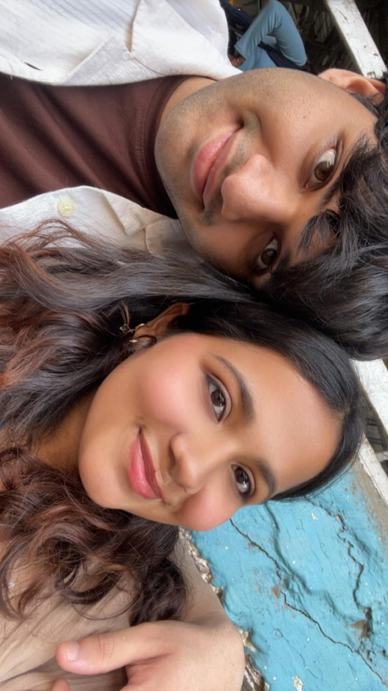

We matched over a month ago, on 25th December, 2025.
I didn’t expect much when we first started talking, but that changed as the days passed — especially after we switched to Instagram on 28th December.
I really liked talking to you… something I didn’t realize would slowly become a part of my daily routine.
Back then, I didn’t know these little, unexpected conversations would turn into the part of my day I look forward to the most.
New year. New beginnings.
We had our first date on 14th January, 2026 at Phoenix Marketcity, Kurla — and you were an hour late hehehe.
But I didn’t mind waiting. I was genuinely looking forward to meeting you, and that one hour was truly worth it. So worth it that I wouldn’t be able to put it into words even if I tried.
It wouldn’t be an understatement to say it was the best first date I’ve ever had. I hadn’t had that much fun in a while.
Thank you for letting me win in air hockey madam 😂 I’m very grateful for your sacrifice and kindness.
And the funniest part? I forgot to give you the gift I got you… but maybe someone wanted to give us a reason to meet again. So I definitely don’t mind hehe.
Our second date at Bandra Mcd was a simple but genuinely fun one — the kind of date I feel is underrated.
We ate a little, talked a lot, got to know each other better, and just spent time together. What’s there not to like about that, right?
I witnessed your bargaining skills for the first time and I was genuinely impressed… kyuki mujhse toh nahi hoga definitely 💀.
Our little walk to the station after that was special. We held hands for the first time, and it honestly felt like a dream tbh.
I finally got to give you my gift — the jhumkas station pe — and your smile and happiness made the wait completely worth it. That’s a moment I’ll definitely remember 😁.
Pehli baar churchgate tak kisi k liye aaya tha… and kyu nahi aaunga, tujhe jo milna tha and tere liye utna toh karunga hi.
It was my first time in Kala Ghoda, and my first time visiting the Kala Ghoda Festival. Kaafi crazy and creative art display tha — but mere liye best piece of art toh tu hi thi obviously (sorry had to say it hehe).
This was also the day I asked you to be my Valentine — something I did for the very first time in my life.
Thoda nervous toh tha, but somewhere I felt like you would like it. And tera reaction was better than anything I could have imagined.
It was truly worth everything and felt nothing short of a sweet dream. Definitely one of the best moments I’ve experienced in my life ❤️.
Uske liye thank you meri jaan 😘.
Our first proper weekend day date.
We weren’t twinning… but somehow we were dressed so similarly, jaise humara ek mind connection ban gaya ho.
You looked heavenly that day. Swarg se aayi apsara jaisi.
It was also the first time we clicked pictures together hehe.
I still look at those pictures from time to time whenever I miss you 😘.

Another chill date — anna idli and long talks in the park.
Spending time together without anything fancy feels underrated.
The teddy drawing you made was really sweet. Tu toh hai hi cutieee!!
And your letter… you really do have great vision.
Our daily chats.
Our occasional calls.
Our short dates.
Our little moments of banter, holding hands, hugging you and keeping you close.
These are some of the things I’ve really come to cherish in such a short time — something I would have never expected just a month ago.
Whenever I used to hear someone say, “She’s the one who adds colour to my life,” I would think maybe they were exaggerating.
But now I know… it’s completely TRUE.
You genuinely add colour to my life — something that would have felt dull and ordinary otherwise.
A short voice note or even a random picture from you can brighten my entire day.
Not getting a reply from you makes me a little sad.
Thinking about you at random moments during the day has somehow become an involuntary activity now 😂.
There’s so much more I feel, but words will never fully capture everything.
All I know is that I really care about you deeply.
And that’s why I don’t want this to just stay in the “almost” zone anymore.
I want to take this… take US… one step forward.
And give it a name — girlfriend and boyfriend — if you want it too.
I need to know one thing.